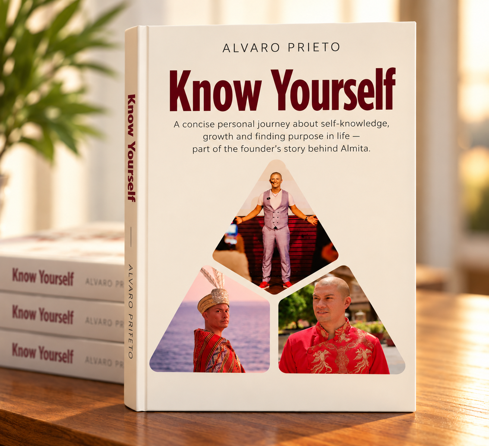
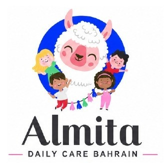
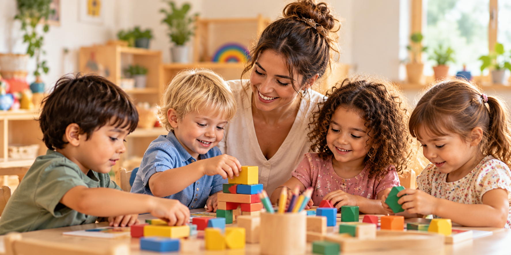
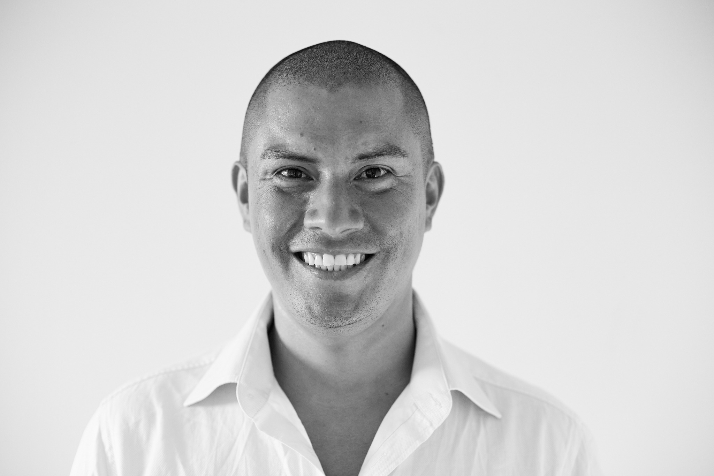
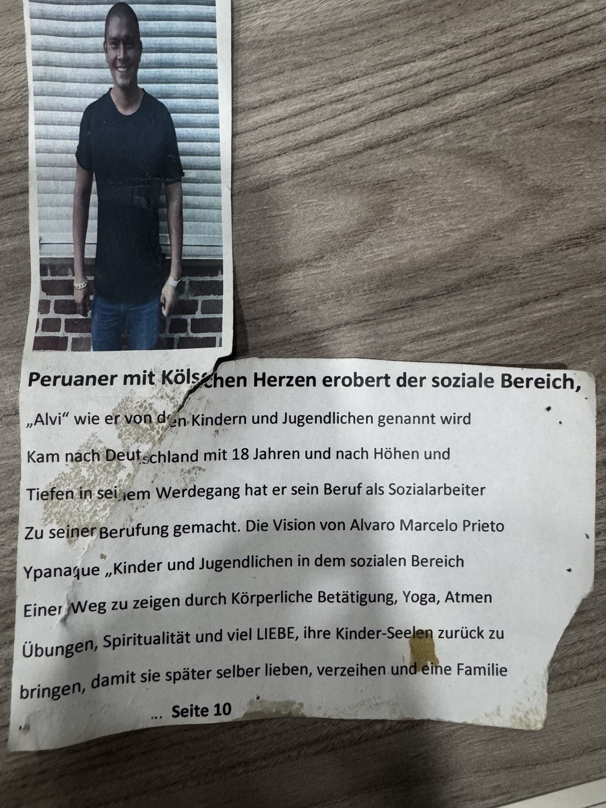

Know Yourself / Conócete a ti mismo

Author: Alvaro Marcelo Prieto Ypanaque
A concise personal journey about self-knowledge, growth and finding purpose in life — part of the founder’s story behind Almita.


A warm place to care, play & grow.
A family-centred childcare concept being created in Bahrain for little ones, school-age children and the families who care for them.
Planning & market-validation stage • Bahrain 2027
The final service structure, ages and operating model remain subject to Bahrain regulatory approval.
Morning, full-day and pre-booked care on selected days with age-appropriate routines, play, movement, rest and emotional security.
A safe place after school with homework support, healthy routines, movement, games, creativity and time to decompress.
Natural language exposure through games, stories, songs, movement and real interaction — an international extra, not a formal school lesson.
Discover the educational philosophy behind Almita and our child-centred approach to development, relationships and learning.
Almita brings a German educational perspective shaped by a holistic and child-centred understanding of development. Children are not expected to develop everything at once. Each stage of childhood has its own needs, rhythms and ways of learning.
In the early years, children discover the world through imitation, movement, sensory experiences, emotional bonds, creativity and free play. A safe relationship and a predictable daily rhythm create the foundation for confidence and healthy development.
As children grow, thinking, emotions and social awareness develop further. Creativity, imagination, friendships, responsibility, empathy and belonging become increasingly important. Almita aims to support this development through meaningful activities, movement, relationships and age-appropriate guidance.

Almita is shaped by 13 years of professional experience with children, young people and families across education and social work, supported by German academic and professional qualifications. The founder’s background includes residential child and youth welfare, child protection, safeguarding, de-escalation and non-violent communication.
His life and work across Peru, Germany and Vietnam bring an international perspective. Spanish heritage and a German educational and professional background support a family-centred vision that aims to listen first and respect Bahrain’s culture and family values.

Author: Alvaro Marcelo Prieto Ypanaque
A concise personal journey about self-knowledge, growth and finding purpose in life — part of the founder’s story behind Almita.

The surviving clipping ends with “... Seite 10”; the continuation is no longer available.
The online parent survey will validate demand for Early Years Care, After-School Care, selected-day care, transport and language options.
Open Parent Survey